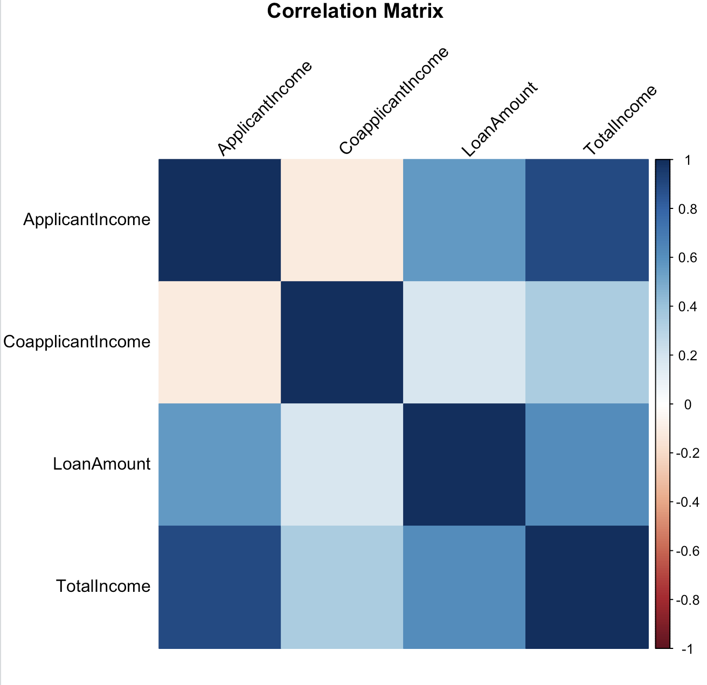
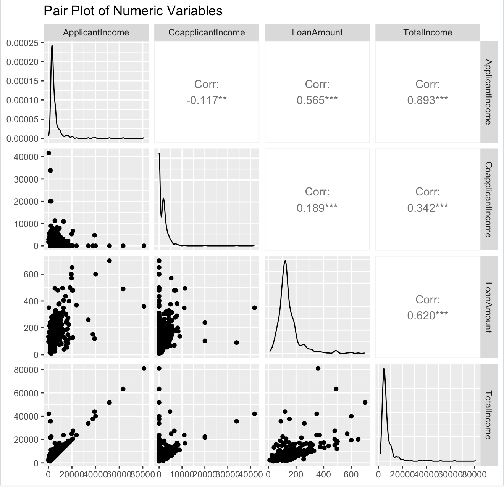
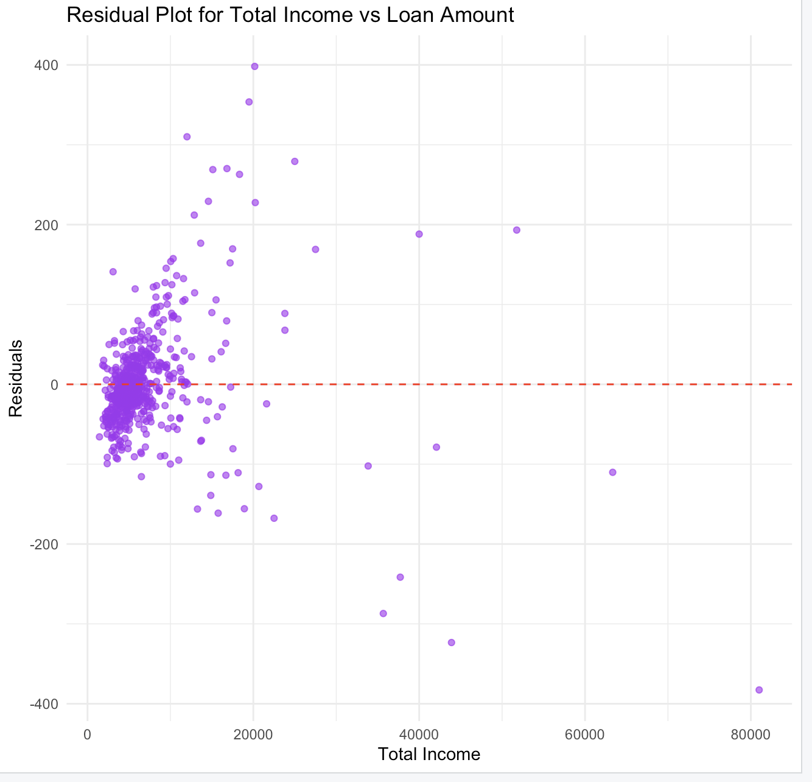
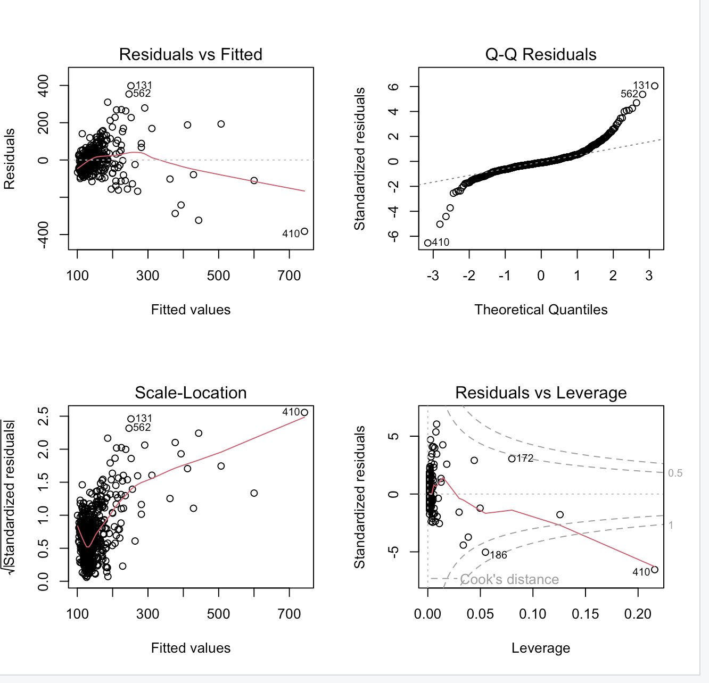

The second study question is: Is there a significant relationship between income levels (Applicant Income and Co-applicant Income) and the loan amount (Loan Amount) granted? This investigation looks into how different sources of income affect the amount of loans that financial institutions authorize. Finding the strength of these correlations and evaluating whether total income (Total Income) is a more accurate indicator of loan amounts are the goals.
Statistical Model and Methodology:
This analysis involves:
- Correlation Analysis:
• Correlation coefficients were computed to assess the strength of the relationships between income variables (Applicant Income, Co-applicant Income, and Total Income) and loan amounts (Loan Amount).
• A correlation matrix and pair plot were used to visualize relationships between the numeric variables.
- Linear Regression Model:
• A simple linear regression model was fitted with Total Income as the predictor and Loan Amount as the response variable.
• The model was evaluated using diagnostic plots, including residuals vs. fitted values, Q-Q plots, and residual leverage plots.
- Visualization:
• A heatmap was used to display the correlation matrix, providing a comprehensive view of the relationships.
• A pair plot visualized scatterplots and density plots of numeric variables alongside their correlation coefficients.
• A residual plot examined the fit of the linear regression model.
Key Results and Insights:
- Visualizations:

• The heatmap visualizes the correlation coefficients between Applicant Income, Co-applicant Income, Loan Amount, and Total Income. A strong positive correlation is observed between Total Income and Loan Amount (0.62) and a moderate correlation between Applicant Income and Loan Amount (0.57). The weak correlation between Co-applicant Income and Loan Amount (0.19) suggests its limited influence on loan size.

• The pair plot shows scatterplots and density plots for numeric variables (ApplicantIncome, CoapplicantIncome, LoanAmount, and TotalIncome). It highlights the positive trend between TotalIncome and LoanAmount, along with their higher correlation compared to CoapplicantIncome. Additionally, the density plots indicate skewed distributions for income variables.

• The residual plot evaluates the fit of the linear regression model between TotalIncome and LoanAmount. Residuals are centered around zero, indicating a reasonable model fit, though heteroscedasticity (wider spread of residuals at higher income levels) is observed. This suggests the need for further model refinement.

• The diagnostic plots assess the validity of the regression assumptions: Residuals vs. Fitted: Indicates some non-linearity but overall reasonable fit. Q-Q Plot: Shows residuals mostly following a normal distribution, with slight deviations at extremes. Scale-Location Plot: Suggests some heteroscedasticity in residuals. Residuals vs. Leverage: Identifies influential data points but no extreme leverage values impacting the model. Each visualization collectively supports the relationship between income variables and loan amounts while highlighting areas for further investigation.
- Correlation Analysis:
The correlation coefficients between income variables and loan amounts are as follows:
• Applicant Income vs. Loan Amount: 0.565 (moderate positive correlation)
• Co-applicant Income vs. Loan Amount: 0.189 (weak positive correlation)
• Total Income vs. Loan Amount: 0.620 (strong positive correlation)
These results indicate that while Applicant Income and Total Income have a moderate to strong influence on loan amounts, the contribution of Co-applicant Income is relatively weak.
- Linear Regression:
• The linear regression model (Loan Amount ~ Total Income) revealed a statistically significant relationship between total income and loan amount.
• The model’s adjusted R2=0.31R2=0.31, suggesting that approximately 31% of the variability in loan amounts can be explained by total income.
• Diagnostic plots showed no major violations of linear regression assumptions, although some heteroscedasticity was observed.
Implications:
The study emphasizes the significance of total income (Total Income) in financial institution loan assessment models by showing that it is a powerful predictor of loan amounts. Co-applicant Income’s diminished function, however, raises the possibility that organizations could enhance their models by giving the principal applicant’s income top priority and looking into additional significant variables like credit history or outstanding debt. These results highlight how important it is for applicants to demonstrate a steady and adequate primary source of income in order to improve their chances of obtaining larger loans. For more accurate evaluations, institutions can further hone their decision-making by adding other variables, such as debt-to-income ratios and employment stability.